Halo,
Saya Farell Nandana Tahir
Mahasiswa Sains Data
‖
Desainer Kapal Vetradash Veteran Robotics

"Good data leads to better decisions"
Saya merupakan mahasiswa Sains Data dari Universitas Pembangunan Nasional "Veteran" Jawa Timur yang memiliki ketertarikan pada analisis dan visualisasi data. Dalam proses belajar, saya terus memahami bagaimana data dapat diolah menjadi informasi yang bermakna dan digunakan untuk mendukung pengambilan keputusan.
Saya memiliki pengalaman dalam melakukan Exploratory Data Analysis (EDA), di mana saya terbiasa mengeksplorasi data untuk menemukan pola, hubungan, serta insight yang dapat memberikan pemahaman lebih dalam terhadap suatu permasalahan.
Saya memiliki minat pada penerapan data dalam bidang Finance Data Science dan Medical Data Science, karena kedua bidang tersebut menunjukkan bagaimana data dapat memberikan dampak nyata dalam pengambilan keputusan.
Saya memiliki komitmen untuk terus mengembangkan kemampuan di bidang sains data, baik dari sisi teknis maupun analitis, serta beradaptasi dengan perkembangan teknologi yang dinamis.

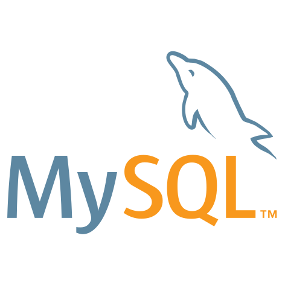


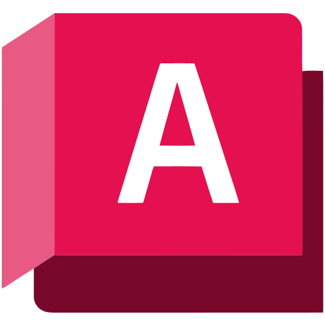
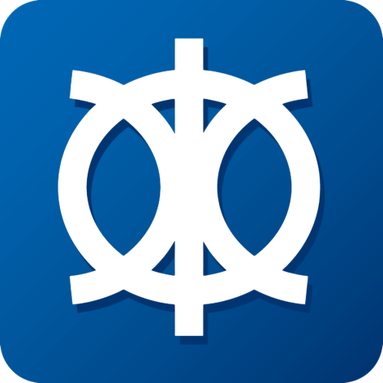
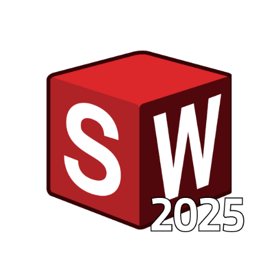

Kemampuan memproses raw data, reduksi dimensi (PCA), hingga merancang model prediktif menggunakan algoritma Machine Learning dan Data Mining berbasis Python.
Keahlian menerapkan metode statistika regresi, analisis multivariat, komputasi numerik, dan aljabar linier untuk menggali insight dan memvalidasi data.
Mampu merancang dan mengelola basis data relasional tingkat lanjut (MySQL), serta memahami arsitektur skala besar melalui konsep Big Data dan Komputasi Awan.
Berperan aktif merancang struktur mekanik dan lambung kapal secara presisi untuk Tim Vetradash Batarasena menggunakan SolidWorks, AutoCAD, dan Maxsurf.

.png)

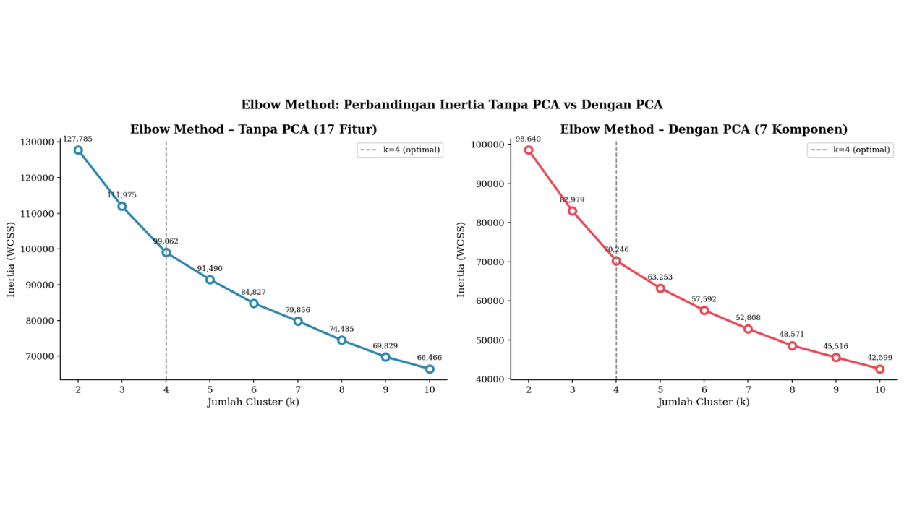
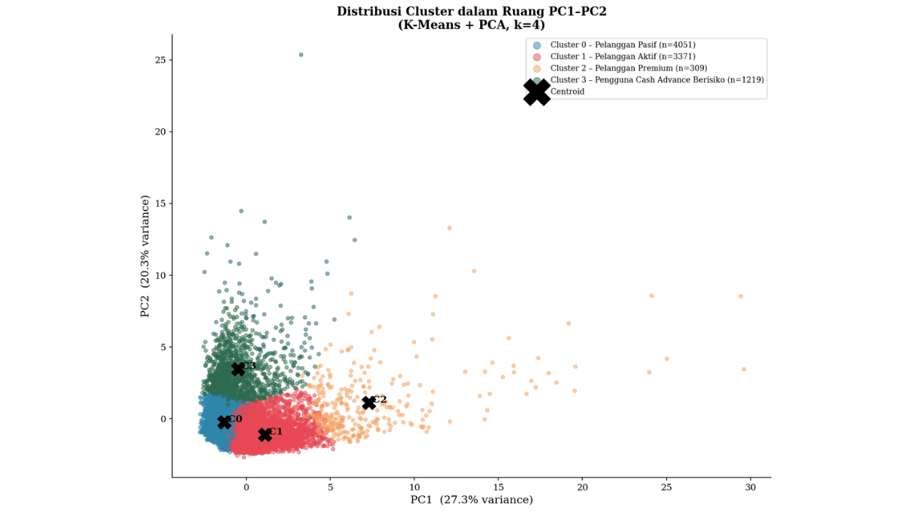
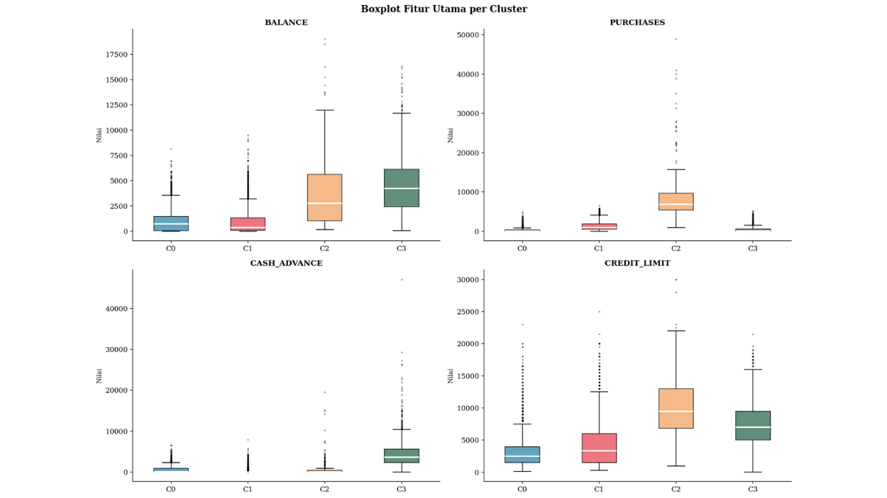
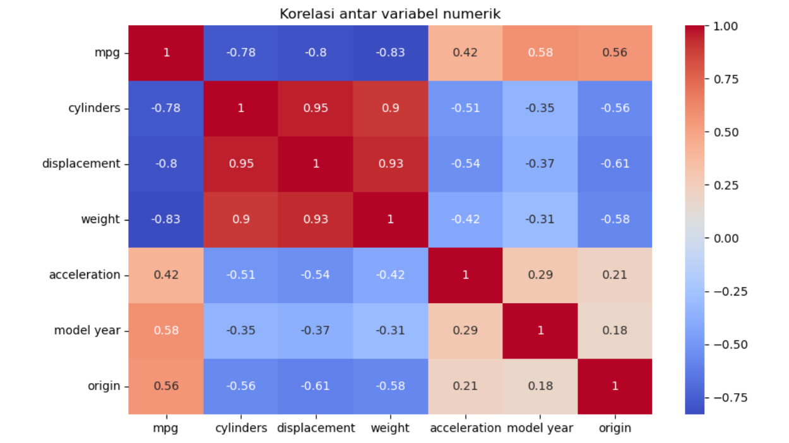
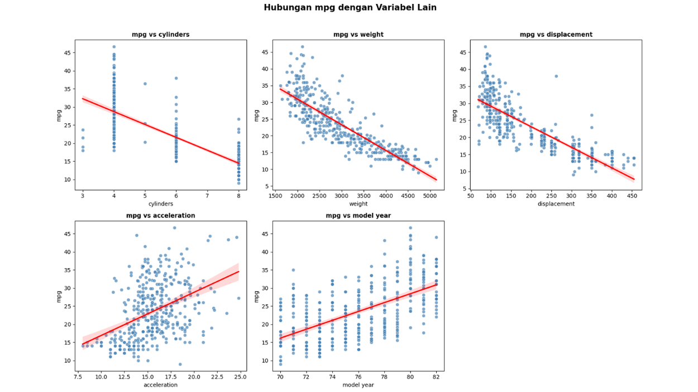
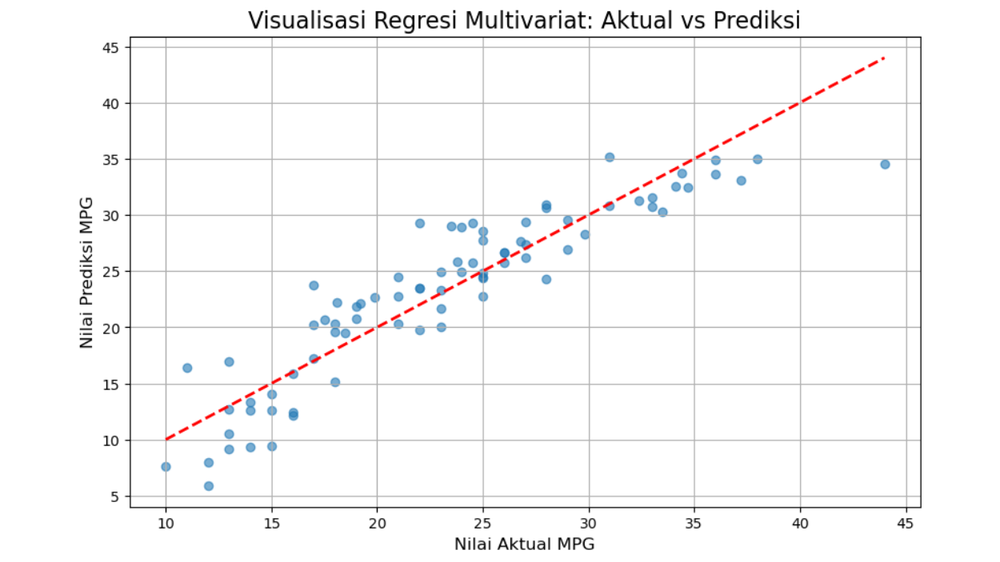
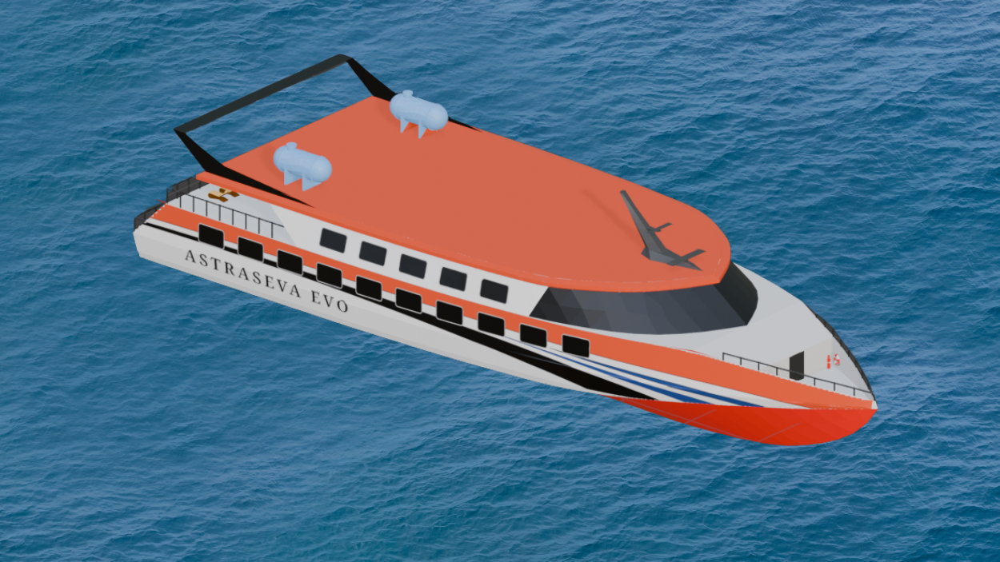
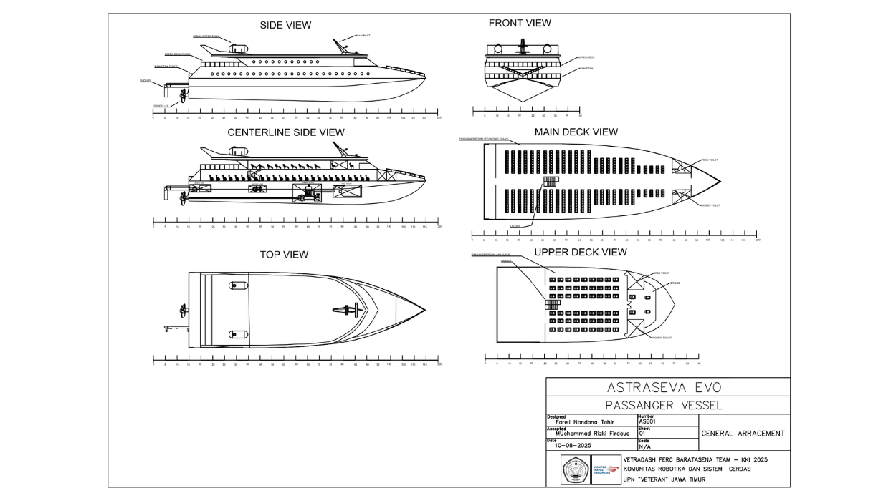
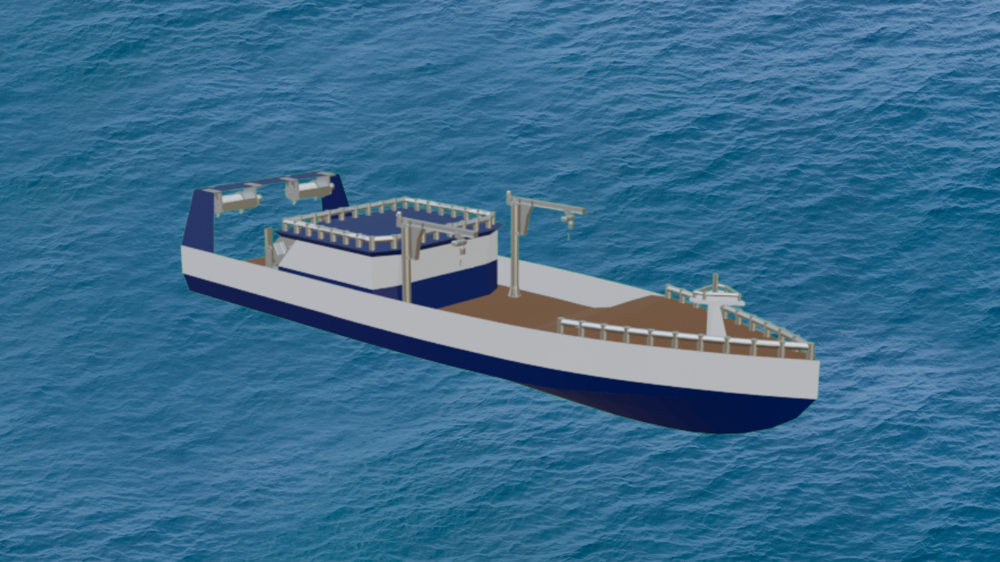
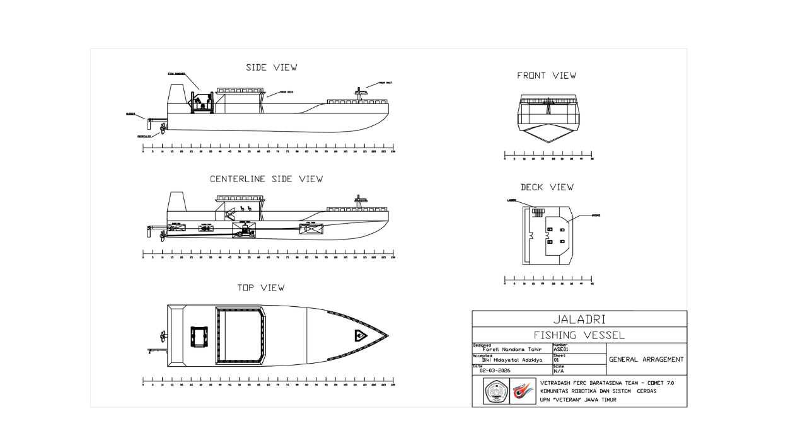